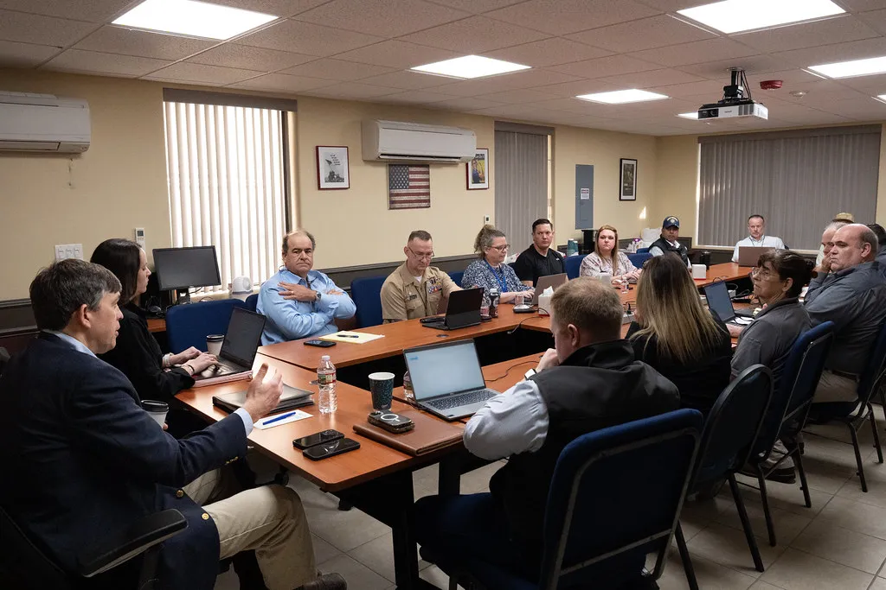

Учебный центр «МОСДОР»: охрана труда и рабочие профессии
Более 30 лет обучаем руководителей, специалистов и рабочих: охрана труда, работы на высоте, электро- и пожарная безопасность, стропальщики, водители погрузчиков, трактористы. Очно у метро «Текстильщики» и дистанционно.

Почему выбирают «МОСДОР»
Бессрочная лицензия
Лицензия Департамента образования Москвы, номер в реестре Рособрнадзора Л035-01298-77/00273634.
Протокол и удостоверение
После проверки знаний — протокол и удостоверение; обучение по охране труда вносится в реестр Минтруда.
Охрана труда по № 2464
Программы А, Б, В, первая помощь и СИЗ — по 16 часов, по новому порядку обучения.
Преподаватели со стажем
Стаж преподавателей — 30–56 лет, переподготовка по педагогике и техносферной безопасности.
Очно, заочно, дистанционно
Очная, очно-заочная и заочная формы, электронное обучение и дистанционные технологии.
Рабочие профессии
Стропальщики, водители погрузчиков, трактористы, лифтёры, машинисты кранов — с практикой.
Цены на главное
Как проходит обучение
- Заявкапо телефону или почте
- Договор и счётдля организации или частного лица
- Обучениеочно, заочно или дистанционно
- Проверка знанийэкзамен в учебном центре
- Документыпротокол и удостоверение
Запишитесь на обучение — пришлём договор и счёт
Москва, ул. Артюхиной, 6, корп. 1 · м. «Текстильщики»